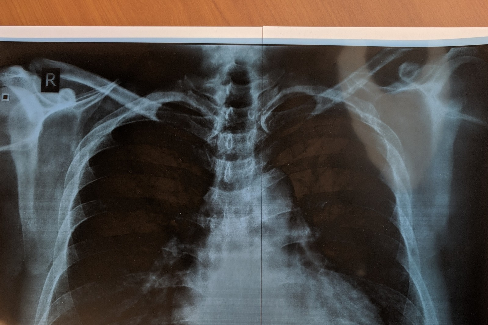
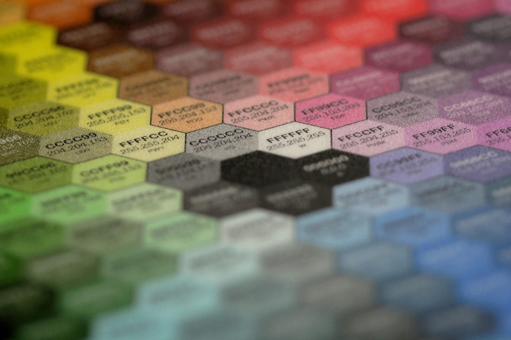

Upload your X-ray, and our machine learning algorithm will analyze it.
Upload
If you don't have your X-ray in a digital format, place your X-ray on a sheet of white paper and snap a pic!

Our algorithm becomes stronger the more it's used. With your help we can surpass physician accuracy!
